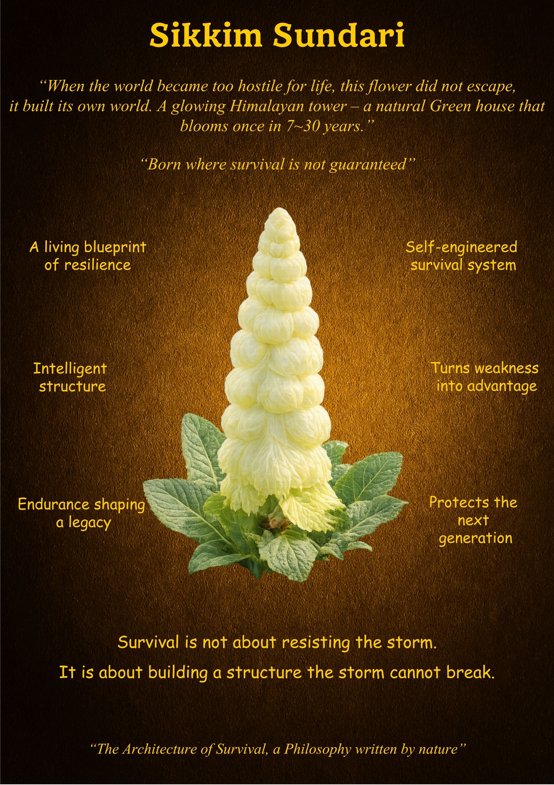

Sikkim Sundari
"Born where survival is not guaranteed."
What is Unique
The Sikkim Sundari is more than a plant; it is a structural phenomenon. While most organisms seek to escape hostile environments, this glowing Himalayan tower builds its own internal climate. It is a natural "Green House" that patiently bides its time, blooming only once in a cycle of 7 to 30 years. It defines the difference between merely lasting and truly enduring.
Overall Synthesis
This exhibit highlights the power of the "Tower Mindset." When external conditions become too harsh to tolerate, the Sikkim Sundari does not flee; it re-engineers its form. It turns the very cold that threatens it into an advantage by trapping heat within its translucent bracts. It stands as a testament that survival is a creative act of architectural defiance.
Its Functioning Systems
Principles & Wisdom
The wisdom of the Sikkim Sundari lies in its refusal to be a victim of its surroundings. It teaches us that "Survival is not about resisting the storm. It is about building a structure the storm cannot break." This principle suggests that we should focus less on fighting the world and more on strengthening our internal architecture. By building personal systems of resilience, we can bloom in conditions that others find uninhabitable.